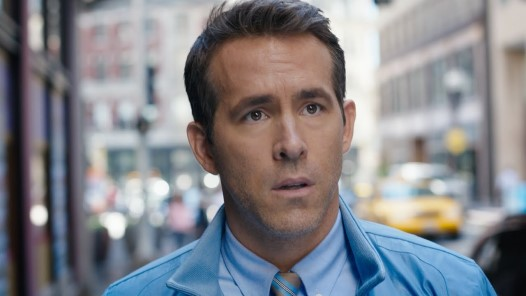
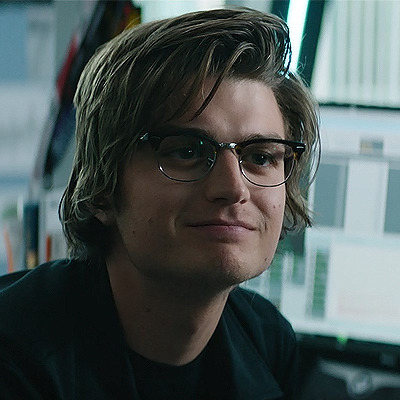
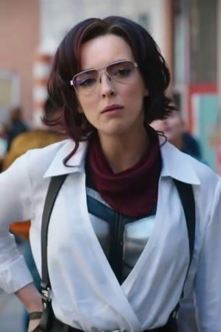
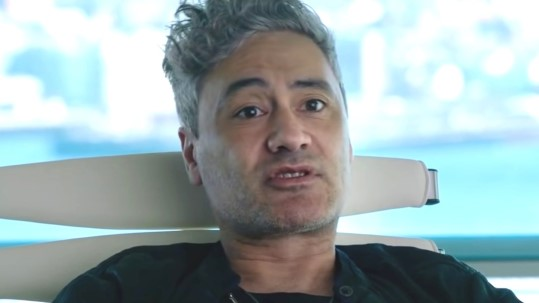

Free Guy Informational Site
Home
Characters
Story
Promotional Art
Guy - Played By: Ryan Reynolds

Buddy - Played By: Lil Rel Howery
Walter "Keys" McKey - Played By: Joe Keery

Millie/Molotov Girl - Played By: Jodie Comer

Antwan - Played By: Taika Waititi
